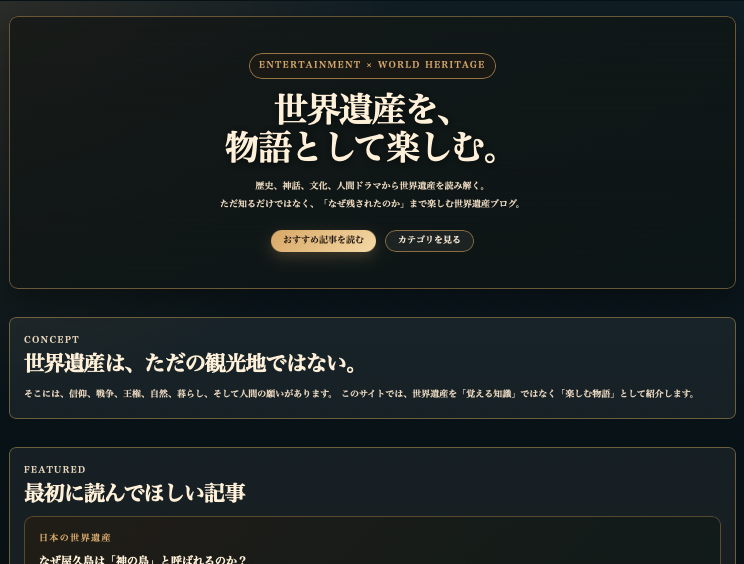
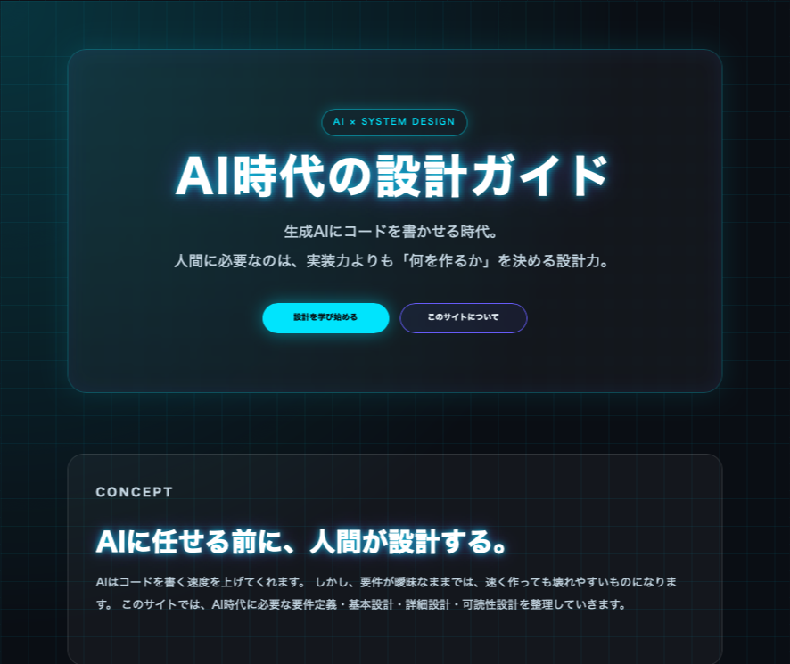

Heritage / Media
エンタメ歴史遺産ブログ
世界遺産・歴史・旅をテーマに、 地図や地域別ページを使って文化遺産を紹介するWebメディア。
情報設計・地図UI・記事生成を組み合わせ、 「巡れる世界遺産データベース」を目指して開発しています。
サイトを見る →工学分野をベースに、 技術を「使える形」に落とし込むことを重視して学んできました。
これまでに技術検証やプロトタイプ開発などを通して、 業務課題に対するシステム設計・実装に携わってきました。
問題の整理や要件定義を行い、 技術を実際の運用や体験へつなげることを得意としています。
現在は個人でWebアプリやAIツール、 情報設計・メディア開発などに取り組んでいます。
問題をそのまま解くのではなく、
前提と制約を整理し、
解ける形に変換することを重視しています。
Python / FastAPI
HTML / CSS / JavaScript
SQLite / MySQL
AWS
Git / GitHub
技術検証・プロトタイプ開発に関わる業務を経験。
要件整理から設計、実装、検証まで、 小規模なシステム開発を一貫して担当してきました。
技術そのものだけでなく、 「どのように現実の課題へ適用するか」を重視しています。

世界遺産・歴史・旅をテーマに、 地図や地域別ページを使って文化遺産を紹介するWebメディア。
情報設計・地図UI・記事生成を組み合わせ、 「巡れる世界遺産データベース」を目指して開発しています。
サイトを見る →
AI・Webアプリ・設計思想について扱う開発サイト。
要件整理から設計、実装まで、 「問題を解ける形に変換する」ことを軸に発信しています。
サイトを見る →
人の可処分時間が増える時代において、
その時間に価値を提供できる存在を目指しています。
エンタメ領域を軸に、
問題設定から解決まで一貫して設計し、
継続的にプロダクトを生み出していきます。
お仕事のご相談、YouTube関連のお問い合わせ、制作のご連絡はこちらからお願いします。
なお、営業・勧誘・誹謗中傷・いたずら送信には対応していません。
入力いただいた情報は、お問い合わせ対応の目的でのみ使用します。
本フォームは FormSubmit を利用して送信されます。住所・電話番号・機密情報など、
重要な個人情報は記載しないでください。